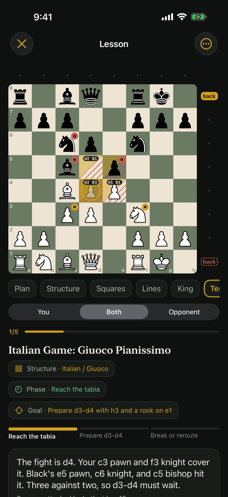

The painted board
See the fight before the moves.
Every lesson step shows one idea on the board. Contested squares glow, and each one carries a count of who attacks it, so "d4 must wait" is something you can see, not something you have to trust.
- Gold and solid is your plan.
- Clay and dashed is your opponent's.
- One idea per step, in a few short sentences.
